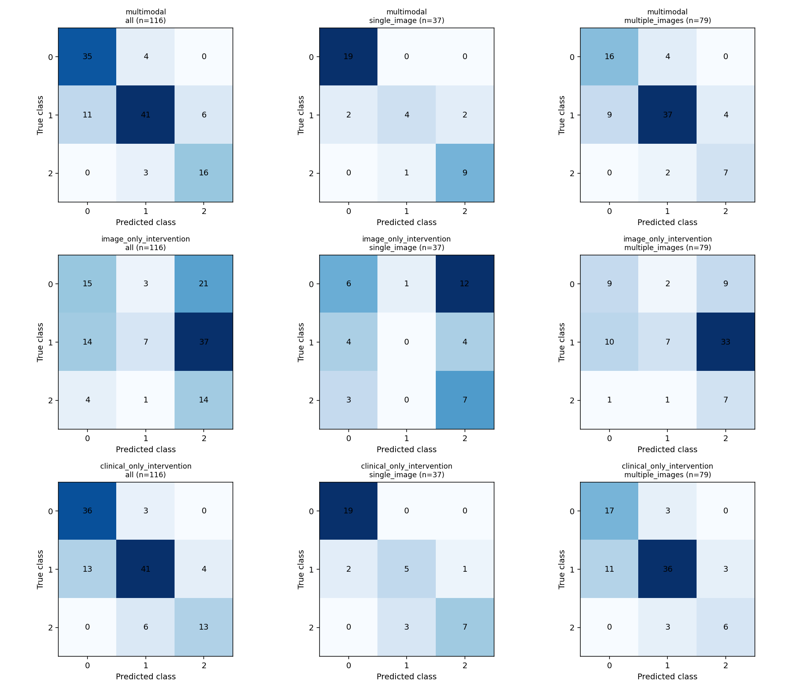
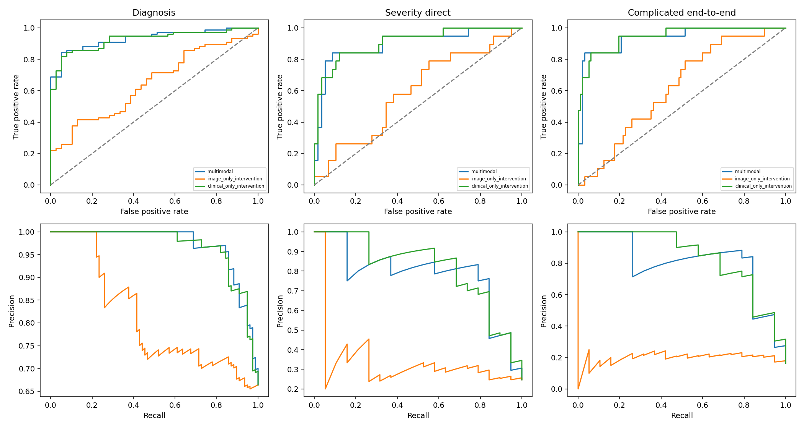
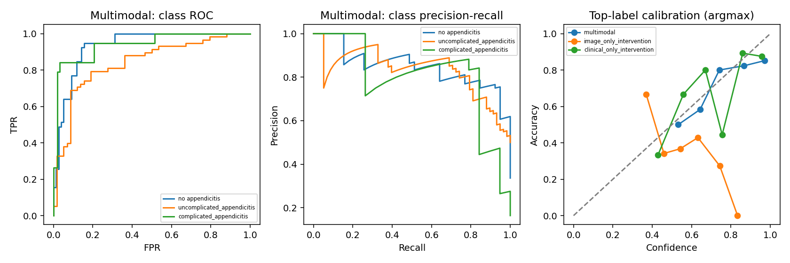

Image-only and clinical-only are embedding interventions on the same multimodal checkpoint, not retrained unimodal baselines.
Missing/undefined metrics are blank/null. Within-class accuracy is recall; one-vs-rest accuracy also counts true negatives.
| mode | group | patients | accuracy | f1 | macro_f1 | precision | sensitivity | specificity | balanced_accuracy | weighted_f1 | mcc | cohen_kappa | auroc_macro_ovr | auprc_macro_average_precision | nll_three_classes | brier_three_classes | ece_top_label_argmax_10bins | argmax_accuracy | accuracy_wilson_95ci | diagnosis_auroc | severity_direct_auroc | complicated_recall |
|---|---|---|---|---|---|---|---|---|---|---|---|---|---|---|---|---|---|---|---|---|---|---|
| multimodal | all | 116 | 0.7931 | 0.7925 | 0.7925 | 0.7808 | 0.8155 | 0.8915 | 0.8155 | 0.7915 | 0.6774 | 0.6709 | 0.9041 | 0.8309 | 0.6432 | 0.3373 | 0.0933 | 0.7931 | [0.7105774078005253, 0.8568389159755486] | 0.9334 | 0.9002 | 0.8421 |
| multimodal | single_image | 37 | 0.8649 | 0.8075 | 0.8075 | 0.8410 | 0.8000 | 0.9268 | 0.8000 | 0.8526 | 0.7816 | 0.7744 | 0.8981 | 0.8078 | 0.5209 | 0.2651 | 0.1029 | 0.8649 | [0.7202258821599022, 0.9408670557426798] | 0.9591 | 0.8750 | 0.9000 |
| multimodal | multiple_images | 79 | 0.7595 | 0.7356 | 0.7356 | 0.7123 | 0.7726 | 0.8611 | 0.7726 | 0.7634 | 0.5775 | 0.5702 | 0.8740 | 0.7656 | 0.7004 | 0.3712 | 0.1160 | 0.7595 | [0.6546430708772922, 0.8402781990238367] | 0.9068 | 0.8667 | 0.7778 |
| image_only_intervention | all | 116 | 0.3103 | 0.3091 | 0.3091 | 0.4285 | 0.4140 | 0.6998 | 0.4140 | 0.2919 | 0.1160 | 0.0869 | 0.6061 | 0.4068 | 1.3720 | 0.7816 | 0.2021 | 0.3621 | [0.23337225940867895, 0.3994760016773909] | 0.6484 | 0.5935 | 0.7368 |
| image_only_intervention | single_image | 37 | 0.3514 | 0.2664 | 0.2664 | 0.2553 | 0.3386 | 0.6613 | 0.3386 | 0.3072 | -0.0053 | -0.0045 | 0.5382 | 0.3858 | 1.1638 | 0.6783 | 0.1475 | 0.4595 | [0.21825607133927127, 0.5124097687744916] | 0.5205 | 0.5625 | 0.7000 |
| image_only_intervention | multiple_images | 79 | 0.2911 | 0.3082 | 0.3082 | 0.4310 | 0.4559 | 0.7034 | 0.4559 | 0.2891 | 0.1443 | 0.0971 | 0.6174 | 0.4243 | 1.4695 | 0.8300 | 0.2670 | 0.3165 | [0.20251993313819475, 0.39912880084382363] | 0.6932 | 0.5689 | 0.7778 |
| clinical_only_intervention | all | 116 | 0.7759 | 0.7666 | 0.7666 | 0.7731 | 0.7714 | 0.8783 | 0.7714 | 0.7730 | 0.6441 | 0.6376 | 0.9012 | 0.8337 | 0.5695 | 0.3357 | 0.1124 | 0.7759 | [0.6918365065022136, 0.8422023864635029] | 0.9277 | 0.9083 | 0.6842 |
| clinical_only_intervention | single_image | 37 | 0.8378 | 0.7843 | 0.7843 | 0.8016 | 0.7750 | 0.9161 | 0.7750 | 0.8332 | 0.7351 | 0.7312 | 0.9095 | 0.8469 | 0.4601 | 0.2670 | 0.1635 | 0.8378 | [0.6886351629906503, 0.9234879276598885] | 0.9532 | 0.9000 | 0.7000 |
| clinical_only_intervention | multiple_images | 79 | 0.7468 | 0.7192 | 0.7192 | 0.7103 | 0.7456 | 0.8546 | 0.7456 | 0.7506 | 0.5595 | 0.5486 | 0.8707 | 0.7685 | 0.6207 | 0.3679 | 0.1220 | 0.7468 | [0.6410574056272599, 0.8297213633030821] | 0.8975 | 0.8867 | 0.6667 |
| mode | group | class | class_index | support | predicted_support | tp | tn | fp | fn | precision | ppv | npv | sensitivity | specificity | f1 | fpr | fnr | balanced_accuracy | mcc | auroc | auprc_average_precision | recall | accuracy_within_class | one_vs_rest_accuracy | recall_wilson_95ci | wilson_95ci |
|---|---|---|---|---|---|---|---|---|---|---|---|---|---|---|---|---|---|---|---|---|---|---|---|---|---|---|
| multimodal | all | no appendicitis | 0 | 39 | 46 | 35 | 66 | 11 | 4 | 0.7609 | 0.7609 | 0.9429 | 0.8974 | 0.8571 | 0.8235 | 0.1429 | 0.1026 | 0.8773 | 0.7287 | 0.9334 | 0.8519 | 0.8974 | 0.8974 | 0.8707 | [0.7642114553714348, 0.9593866865533163] | {'accuracy': [0.7975686759498692, 0.9200460864728124], 'sensitivity': [0.7642114553714348, 0.9593866865533163], 'specificity': [0.7620272983402657, 0.9183166836008526], 'ppv': [0.6206486144237799, 0.8608782222272218], 'npv': [0.8620804952516177, 0.9775562208992887]} |
| multimodal | all | uncomplicated_appendicitis | 1 | 58 | 48 | 41 | 51 | 7 | 17 | 0.8542 | 0.8542 | 0.7500 | 0.7069 | 0.8793 | 0.7736 | 0.1207 | 0.2931 | 0.7931 | 0.5951 | 0.8401 | 0.8324 | 0.7069 | 0.7069 | 0.7931 | [0.5798709910321588, 0.8082181720903779] | {'accuracy': [0.7105774078005253, 0.8568389159755486], 'sensitivity': [0.5798709910321588, 0.8082181720903779], 'specificity': [0.7712064595403911, 0.9402903395175928], 'ppv': [0.7283282347525372, 0.9275175067339628], 'npv': [0.6356144714454862, 0.8376498602944785]} |
| multimodal | all | complicated_appendicitis | 2 | 19 | 22 | 16 | 91 | 6 | 3 | 0.7273 | 0.7273 | 0.9681 | 0.8421 | 0.9381 | 0.7805 | 0.0619 | 0.1579 | 0.8901 | 0.7366 | 0.9387 | 0.8083 | 0.8421 | 0.8421 | 0.9224 | [0.6243452472967093, 0.9447952836146585] | {'accuracy': [0.8591003375006443, 0.9586467173531092], 'sensitivity': [0.6243452472967093, 0.9447952836146585], 'specificity': [0.8715621680383414, 0.9713451142842817], 'ppv': [0.5184826598759762, 0.8684923971201053], 'npv': [0.9103268539187764, 0.9890873725316923]} |
| multimodal | single_image | no appendicitis | 0 | 19 | 21 | 19 | 16 | 2 | 0 | 0.9048 | 0.9048 | 1.0000 | 1.0000 | 0.8889 | 0.9500 | 0.1111 | 0.0000 | 0.9444 | 0.8968 | 0.9591 | 0.9546 | 1.0000 | 1.0000 | 0.9459 | [0.8318207759473838, 0.9999999999999999] | {'accuracy': [0.822953456491869, 0.9850490231668423], 'sensitivity': [0.8318207759473838, 0.9999999999999999], 'specificity': [0.672002348698212, 0.9689804773543876], 'ppv': [0.7108586092608176, 0.9734812325619255], 'npv': [0.8063923194655636, 1.0]} |
| multimodal | single_image | uncomplicated_appendicitis | 1 | 8 | 5 | 4 | 28 | 1 | 4 | 0.8000 | 0.8000 | 0.8750 | 0.5000 | 0.9655 | 0.6154 | 0.0345 | 0.5000 | 0.7328 | 0.5606 | 0.7759 | 0.5868 | 0.5000 | 0.5000 | 0.8649 | [0.21521606221387762, 0.7847839377861223] | {'accuracy': [0.7202258821599022, 0.9408670557426798], 'sensitivity': [0.21521606221387762, 0.7847839377861223], 'specificity': [0.8282447812067973, 0.9938867857072374], 'ppv': [0.3755346297625255, 0.9637758913675698], 'npv': [0.7193169451834979, 0.9502986561251993]} |
| multimodal | single_image | complicated_appendicitis | 2 | 10 | 11 | 9 | 25 | 2 | 1 | 0.8182 | 0.8182 | 0.9615 | 0.9000 | 0.9259 | 0.8571 | 0.0741 | 0.1000 | 0.9130 | 0.8025 | 0.9593 | 0.8821 | 0.9000 | 0.9000 | 0.9189 | [0.5958499732047616, 0.982123786904927] | {'accuracy': [0.7869932065071162, 0.9720394258995521], 'sensitivity': [0.5958499732047616, 0.982123786904927], 'specificity': [0.7663040731697686, 0.9794453459390113], 'ppv': [0.5230194380391561, 0.948632310253915], 'npv': [0.8110722109696525, 0.9931780150064565]} |
| multimodal | multiple_images | no appendicitis | 0 | 20 | 25 | 16 | 50 | 9 | 4 | 0.6400 | 0.6400 | 0.9259 | 0.8000 | 0.8475 | 0.7111 | 0.1525 | 0.2000 | 0.8237 | 0.6053 | 0.9068 | 0.7051 | 0.8000 | 0.8000 | 0.8354 | [0.5839825677481065, 0.9193423374202019] | {'accuracy': [0.738543347728053, 0.9012329279977964], 'sensitivity': [0.5839825677481065, 0.9193423374202019], 'specificity': [0.7348201621622644, 0.9176153600140352], 'ppv': [0.44518497748164865, 0.7975211922554178], 'npv': [0.8244588416140005, 0.9708184722344951]} |
| multimodal | multiple_images | uncomplicated_appendicitis | 1 | 50 | 43 | 37 | 23 | 6 | 13 | 0.8605 | 0.8605 | 0.6389 | 0.7400 | 0.7931 | 0.7957 | 0.2069 | 0.2600 | 0.7666 | 0.5160 | 0.8090 | 0.8631 | 0.7400 | 0.7400 | 0.7595 | [0.6044684273515117, 0.8412847250644762] | {'accuracy': [0.6546430708772922, 0.8402781990238367], 'sensitivity': [0.6044684273515117, 0.8412847250644762], 'specificity': [0.6160990959613211, 0.9015392980215897], 'ppv': [0.7273641203261714, 0.9344427657203511], 'npv': [0.4757507548555804, 0.7752440705348462]} |
| multimodal | multiple_images | complicated_appendicitis | 2 | 9 | 11 | 7 | 66 | 4 | 2 | 0.6364 | 0.6364 | 0.9706 | 0.7778 | 0.9429 | 0.7000 | 0.0571 | 0.2222 | 0.8603 | 0.6614 | 0.9063 | 0.7286 | 0.7778 | 0.7778 | 0.9241 | [0.452588969106989, 0.9367748928821532] | {'accuracy': [0.8440458309717235, 0.9647279515496333], 'sensitivity': [0.452588969106989, 0.9367748928821532], 'specificity': [0.8620804952516177, 0.9775562208992887], 'ppv': [0.35380117450784904, 0.8483352890463243], 'npv': [0.8989536863477694, 0.9918968204568701]} |
| image_only_intervention | all | no appendicitis | 0 | 39 | 33 | 15 | 59 | 18 | 24 | 0.4545 | 0.4545 | 0.7108 | 0.3846 | 0.7662 | 0.4167 | 0.2338 | 0.6154 | 0.5754 | 0.1580 | 0.6484 | 0.4394 | 0.3846 | 0.3846 | 0.6379 | [0.24891373465561353, 0.5410093854307493] | {'accuracy': [0.5473509245919844, 0.7196685218908739], 'sensitivity': [0.24891373465561353, 0.5410093854307493], 'specificity': [0.6604617147211471, 0.846703799089505], 'ppv': [0.2984293851387611, 0.6201406146378252], 'npv': [0.6057077916547713, 0.7973255115082518]} |
| image_only_intervention | all | uncomplicated_appendicitis | 1 | 58 | 11 | 7 | 54 | 4 | 51 | 0.6364 | 0.6364 | 0.5143 | 0.1207 | 0.9310 | 0.2029 | 0.0690 | 0.8793 | 0.5259 | 0.0883 | 0.5482 | 0.5644 | 0.1207 | 0.1207 | 0.5259 | [0.05970966048240722, 0.2287935404596088] | {'accuracy': [0.4356301966943292, 0.6144359495212066], 'sensitivity': [0.05970966048240722, 0.2287935404596088], 'specificity': [0.8356633368561965, 0.9728557529824216], 'ppv': [0.35380117450784904, 0.8483352890463243], 'npv': [0.4198849180504654, 0.6076781083229885]} |
| image_only_intervention | all | complicated_appendicitis | 2 | 19 | 72 | 14 | 39 | 58 | 5 | 0.1944 | 0.1944 | 0.8864 | 0.7368 | 0.4021 | 0.3077 | 0.5979 | 0.2632 | 0.5695 | 0.1059 | 0.6218 | 0.2167 | 0.7368 | 0.7368 | 0.4569 | [0.5120844910218489, 0.8819358765321748] | {'accuracy': [0.3690819037804871, 0.5474745191936198], 'sensitivity': [0.5120844910218489, 0.8819358765321748], 'specificity': [0.31002196601656606, 0.5015634649936711], 'ppv': [0.11951479379450558, 0.30032758945888527], 'npv': [0.7602084758339172, 0.950472193989075]} |
| image_only_intervention | single_image | no appendicitis | 0 | 19 | 13 | 6 | 11 | 7 | 13 | 0.4615 | 0.4615 | 0.4583 | 0.3158 | 0.6111 | 0.3750 | 0.3889 | 0.6842 | 0.4635 | -0.0765 | 0.5205 | 0.5181 | 0.3158 | 0.3158 | 0.4595 | [0.15364379087792282, 0.5398959232467252] | {'accuracy': [0.3103856980437304, 0.6161595310782051], 'sensitivity': [0.15364379087792282, 0.5398959232467252], 'specificity': [0.38619041602237913, 0.7969475342783637], 'ppv': [0.23206067809538308, 0.7085620428549398], 'npv': [0.2789133373121099, 0.6492513464108051]} |
| image_only_intervention | single_image | uncomplicated_appendicitis | 1 | 8 | 1 | 0 | 28 | 1 | 8 | 0.0000 | 0.0000 | 0.7778 | 0.0000 | 0.9655 | 0.0000 | 0.0345 | 1.0000 | 0.4828 | -0.0875 | 0.4052 | 0.2442 | 0.0000 | 0.0000 | 0.7568 | [0.0, 0.3244075648838801] | {'accuracy': [0.5988270787855736, 0.866386470108836], 'sensitivity': [0.0, 0.3244075648838801], 'specificity': [0.8282447812067973, 0.9938867857072374], 'ppv': [0.0, 0.7934506856227626], 'npv': [0.6191529705388181, 0.8828366802420353]} |
| image_only_intervention | single_image | complicated_appendicitis | 2 | 10 | 23 | 7 | 11 | 16 | 3 | 0.3043 | 0.3043 | 0.7857 | 0.7000 | 0.4074 | 0.4242 | 0.5926 | 0.3000 | 0.5537 | 0.0984 | 0.6889 | 0.3950 | 0.7000 | 0.7000 | 0.4865 | [0.39677814746114537, 0.8922087325936989] | {'accuracy': [0.3344640430301665, 0.641051033343812], 'sensitivity': [0.39677814746114537, 0.8922087325936989], 'specificity': [0.24514757074395566, 0.5927329903193531], 'ppv': [0.15604024453214027, 0.508657562687592], 'npv': [0.5241076941339973, 0.9242861328730683]} |
| image_only_intervention | multiple_images | no appendicitis | 0 | 20 | 20 | 9 | 48 | 11 | 11 | 0.4500 | 0.4500 | 0.8136 | 0.4500 | 0.8136 | 0.4500 | 0.1864 | 0.5500 | 0.6318 | 0.2636 | 0.6932 | 0.4223 | 0.4500 | 0.4500 | 0.7215 | [0.25819785825562425, 0.6579146575496576] | {'accuracy': [0.6141755025997596, 0.8083182643890087], 'sensitivity': [0.25819785825562425, 0.6579146575496576], 'specificity': [0.6962104955303725, 0.8925727805799468], 'ppv': [0.25819785825562425, 0.6579146575496576], 'npv': [0.6962104955303725, 0.8925727805799468]} |
| image_only_intervention | multiple_images | uncomplicated_appendicitis | 1 | 50 | 10 | 7 | 26 | 3 | 43 | 0.7000 | 0.7000 | 0.3768 | 0.1400 | 0.8966 | 0.2333 | 0.1034 | 0.8600 | 0.5183 | 0.0530 | 0.5621 | 0.6759 | 0.1400 | 0.1400 | 0.4177 | [0.06950833427016292, 0.26186193710585537] | {'accuracy': [0.31526628140121804, 0.5278074622886679], 'sensitivity': [0.06950833427016292, 0.26186193710585537], 'specificity': [0.736149189092262, 0.9641851086493229], 'ppv': [0.39677814746114537, 0.8922087325936989], 'npv': [0.27183529027019365, 0.4947811356604423]} |
| image_only_intervention | multiple_images | complicated_appendicitis | 2 | 9 | 49 | 7 | 28 | 42 | 2 | 0.1429 | 0.1429 | 0.9333 | 0.7778 | 0.4000 | 0.2414 | 0.6000 | 0.2222 | 0.5889 | 0.1164 | 0.5968 | 0.1747 | 0.7778 | 0.7778 | 0.4430 | [0.452588969106989, 0.9367748928821532] | {'accuracy': [0.3386778751145434, 0.5526808705169161], 'sensitivity': [0.452588969106989, 0.9367748928821532], 'specificity': [0.2933425772556162, 0.5170620352264371], 'ppv': [0.07096423720406764, 0.26667706223914406], 'npv': [0.7867654163738309, 0.9815229762087296]} |
| clinical_only_intervention | all | no appendicitis | 0 | 39 | 49 | 36 | 64 | 13 | 3 | 0.7347 | 0.7347 | 0.9552 | 0.9231 | 0.8312 | 0.8182 | 0.1688 | 0.0769 | 0.8771 | 0.7214 | 0.9277 | 0.8331 | 0.9231 | 0.9231 | 0.8621 | [0.7967892883204503, 0.9734926046962203] | {'accuracy': [0.787644450634584, 0.913281596382919], 'sensitivity': [0.7967892883204503, 0.9734926046962203], 'specificity': [0.7322711067008882, 0.8985933129172399], 'ppv': [0.5973771102868922, 0.837887178650426], 'npv': [0.8764216691090624, 0.9846560248779613]} |
| clinical_only_intervention | all | uncomplicated_appendicitis | 1 | 58 | 50 | 41 | 49 | 9 | 17 | 0.8200 | 0.8200 | 0.7424 | 0.7069 | 0.8448 | 0.7593 | 0.1552 | 0.2931 | 0.7759 | 0.5570 | 0.8306 | 0.8239 | 0.7069 | 0.7069 | 0.7759 | [0.5798709910321588, 0.8082181720903779] | {'accuracy': [0.6918365065022136, 0.8422023864635029], 'sensitivity': [0.5798709910321588, 0.8082181720903779], 'specificity': [0.730660191401075, 0.9161550804698196], 'ppv': [0.6920394632569922, 0.9022980732976582], 'npv': [0.6256690145359198, 0.8325115638817573]} |
| clinical_only_intervention | all | complicated_appendicitis | 2 | 19 | 17 | 13 | 93 | 4 | 6 | 0.7647 | 0.7647 | 0.9394 | 0.6842 | 0.9588 | 0.7222 | 0.0412 | 0.3158 | 0.8215 | 0.6728 | 0.9452 | 0.8442 | 0.6842 | 0.6842 | 0.9138 | [0.4601040767532747, 0.8463562091220771] | {'accuracy': [0.8485576942481899, 0.9525006452003851], 'sensitivity': [0.4601040767532747, 0.8463562091220771], 'specificity': [0.8987247439592628, 0.9838487634138368], 'ppv': [0.5273820188043501, 0.9044495567791988], 'npv': [0.8740321262351005, 0.9719302025537786]} |
| clinical_only_intervention | single_image | no appendicitis | 0 | 19 | 21 | 19 | 16 | 2 | 0 | 0.9048 | 0.9048 | 1.0000 | 1.0000 | 0.8889 | 0.9500 | 0.1111 | 0.0000 | 0.9444 | 0.8968 | 0.9532 | 0.9396 | 1.0000 | 1.0000 | 0.9459 | [0.8318207759473838, 0.9999999999999999] | {'accuracy': [0.822953456491869, 0.9850490231668423], 'sensitivity': [0.8318207759473838, 0.9999999999999999], 'specificity': [0.672002348698212, 0.9689804773543876], 'ppv': [0.7108586092608176, 0.9734812325619255], 'npv': [0.8063923194655636, 1.0]} |
| clinical_only_intervention | single_image | uncomplicated_appendicitis | 1 | 8 | 8 | 5 | 26 | 3 | 3 | 0.6250 | 0.6250 | 0.8966 | 0.6250 | 0.8966 | 0.6250 | 0.1034 | 0.3750 | 0.7608 | 0.5216 | 0.7974 | 0.6579 | 0.6250 | 0.6250 | 0.8378 | [0.3057423946026274, 0.8631557141764026] | {'accuracy': [0.6886351629906503, 0.9234879276598885], 'sensitivity': [0.3057423946026274, 0.8631557141764026], 'specificity': [0.736149189092262, 0.9641851086493229], 'ppv': [0.3057423946026274, 0.8631557141764026], 'npv': [0.736149189092262, 0.9641851086493229]} |
| clinical_only_intervention | single_image | complicated_appendicitis | 2 | 10 | 8 | 7 | 26 | 1 | 3 | 0.8750 | 0.8750 | 0.8966 | 0.7000 | 0.9630 | 0.7778 | 0.0370 | 0.3000 | 0.8315 | 0.7152 | 0.9778 | 0.9433 | 0.7000 | 0.7000 | 0.8919 | [0.39677814746114537, 0.8922087325936989] | {'accuracy': [0.7529146845587398, 0.9571481005958853], 'sensitivity': [0.39677814746114537, 0.8922087325936989], 'specificity': [0.8171653406642416, 0.9934318540192151], 'ppv': [0.5291118177871466, 0.9775825085499432], 'npv': [0.736149189092262, 0.9641851086493229]} |
| clinical_only_intervention | multiple_images | no appendicitis | 0 | 20 | 28 | 17 | 48 | 11 | 3 | 0.6071 | 0.6071 | 0.9412 | 0.8500 | 0.8136 | 0.7083 | 0.1864 | 0.1500 | 0.8318 | 0.6032 | 0.8975 | 0.6813 | 0.8500 | 0.8500 | 0.8228 | [0.6395811352592431, 0.9476312541037835] | {'accuracy': [0.7242380412359362, 0.8913957335191265], 'sensitivity': [0.6395811352592431, 0.9476312541037835], 'specificity': [0.6962104955303725, 0.8925727805799468], 'ppv': [0.4240904429659719, 0.764343134584204], 'npv': [0.8407537395119957, 0.9797933605775353]} |
| clinical_only_intervention | multiple_images | uncomplicated_appendicitis | 1 | 50 | 42 | 36 | 23 | 6 | 14 | 0.8571 | 0.8571 | 0.6216 | 0.7200 | 0.7931 | 0.7826 | 0.2069 | 0.2800 | 0.7566 | 0.4956 | 0.7972 | 0.8587 | 0.7200 | 0.7200 | 0.7468 | [0.5833487630404345, 0.8252582933408877] | {'accuracy': [0.6410574056272599, 0.8297213633030821], 'sensitivity': [0.5833487630404345, 0.8252582933408877], 'specificity': [0.6160990959613211, 0.9015392980215897], 'ppv': [0.7215891052555521, 0.9328403298403734], 'npv': [0.46100430439217654, 0.7593600082420173]} |
| clinical_only_intervention | multiple_images | complicated_appendicitis | 2 | 9 | 9 | 6 | 67 | 3 | 3 | 0.6667 | 0.6667 | 0.9571 | 0.6667 | 0.9571 | 0.6667 | 0.0429 | 0.3333 | 0.8119 | 0.6238 | 0.9175 | 0.7657 | 0.6667 | 0.6667 | 0.9241 | [0.3542021355803963, 0.879416181613089] | {'accuracy': [0.8440458309717235, 0.9647279515496333], 'sensitivity': [0.3542021355803963, 0.879416181613089], 'specificity': [0.8814033125147246, 0.9853184589958887], 'ppv': [0.3542021355803963, 0.879416181613089], 'npv': [0.8814033125147246, 0.9853184589958887]} |
| mode | group | task | status | patients | support_positive | support_negative | tp | tn | fp | fn | accuracy | precision | ppv | npv | sensitivity | recall | specificity | f1 | negative_class_precision | negative_class_recall | negative_class_f1 | macro_f1 | weighted_f1 | fpr | fnr | balanced_accuracy | mcc | auroc | auprc_average_precision | brier | log_loss | confusion_matrix | confusion_matrix_order | wilson_95ci | positive_class | negative_class | decision_rule | ranking_score |
|---|---|---|---|---|---|---|---|---|---|---|---|---|---|---|---|---|---|---|---|---|---|---|---|---|---|---|---|---|---|---|---|---|---|---|---|---|---|---|
| multimodal | all | diagnosis | ok | 116 | 77 | 39 | 66 | 35 | 4 | 11 | 0.8707 | 0.9429 | 0.9429 | 0.7609 | 0.8571 | 0.8571 | 0.8974 | 0.8980 | 0.7609 | 0.8974 | 0.8235 | 0.8607 | 0.8729 | 0.1026 | 0.1429 | 0.8773 | 0.7287 | 0.9334 | 0.9700 | 0.1046 | 0.3605 | [[35, 4], [11, 66]] | [negative, positive] | {'accuracy': [0.7975686759498692, 0.9200460864728124], 'sensitivity': [0.7620272983402657, 0.9183166836008526], 'specificity': [0.7642114553714348, 0.9593866865533163], 'ppv': [0.8620804952516177, 0.9775562208992887], 'npv': [0.6206486144237799, 0.8608782222272218]} | appendicitis | no appendicitis | NaN | NaN |
| multimodal | all | severity_direct_true_appendicitis | ok | 77 | 19 | 58 | 16 | 52 | 6 | 3 | 0.8831 | 0.7273 | 0.7273 | 0.9455 | 0.8421 | 0.8421 | 0.8966 | 0.7805 | 0.9455 | 0.8966 | 0.9204 | 0.8504 | 0.8858 | 0.1034 | 0.1579 | 0.8693 | 0.7049 | 0.9002 | 0.7873 | 0.1048 | 0.4259 | [[52, 6], [3, 16]] | [negative, positive] | {'accuracy': [0.7925491643206027, 0.937274379943506], 'sensitivity': [0.6243452472967093, 0.9447952836146585], 'specificity': [0.7921189700751577, 0.951718592576371], 'ppv': [0.5184826598759762, 0.8684923971201053], 'npv': [0.8514693945594621, 0.9812767844453155]} | complicated | uncomplicated | NaN | NaN |
| multimodal | all | severity_after_gating_true_appendicitis | ok | 77 | 19 | 58 | 16 | 52 | 6 | 3 | 0.8831 | 0.7273 | 0.7273 | 0.9455 | 0.8421 | 0.8421 | 0.8966 | 0.7805 | 0.9455 | 0.8966 | 0.9204 | 0.8504 | 0.8858 | 0.1034 | 0.1579 | 0.8693 | 0.7049 | 0.9093 | 0.8132 | 0.0912 | 0.3811 | [[52, 6], [3, 16]] | [negative, positive] | {'accuracy': [0.7925491643206027, 0.937274379943506], 'sensitivity': [0.6243452472967093, 0.9447952836146585], 'specificity': [0.7921189700751577, 0.951718592576371], 'ppv': [0.5184826598759762, 0.8684923971201053], 'npv': [0.8514693945594621, 0.9812767844453155]} | complicated | uncomplicated | p >= 0.5 AND q >= 0.5 | p*q; decision is not threshold(p*q) |
| multimodal | all | complicated_end_to_end_all_patients | ok | 116 | 19 | 97 | 16 | 91 | 6 | 3 | 0.9224 | 0.7273 | 0.7273 | 0.9681 | 0.8421 | 0.8421 | 0.9381 | 0.7805 | 0.9681 | 0.9381 | 0.9529 | 0.8667 | 0.9246 | 0.0619 | 0.1579 | 0.8901 | 0.7366 | 0.9387 | 0.8083 | 0.0607 | 0.2549 | [[91, 6], [3, 16]] | [negative, positive] | {'accuracy': [0.8591003375006443, 0.9586467173531092], 'sensitivity': [0.6243452472967093, 0.9447952836146585], 'specificity': [0.8715621680383414, 0.9713451142842817], 'ppv': [0.5184826598759762, 0.8684923971201053], 'npv': [0.9103268539187764, 0.9890873725316923]} | complicated | no or uncomplicated | p >= 0.5 AND q >= 0.5 | p*q; decision is not threshold(p*q) |
| multimodal | single_image | diagnosis | ok | 37 | 18 | 19 | 16 | 19 | 0 | 2 | 0.9459 | 1.0000 | 1.0000 | 0.9048 | 0.8889 | 0.8889 | 1.0000 | 0.9412 | 0.9048 | 1.0000 | 0.9500 | 0.9456 | 0.9457 | 0.0000 | 0.1111 | 0.9444 | 0.8968 | 0.9591 | 0.9696 | 0.0674 | 0.2521 | [[19, 0], [2, 16]] | [negative, positive] | {'accuracy': [0.822953456491869, 0.9850490231668423], 'sensitivity': [0.672002348698212, 0.9689804773543876], 'specificity': [0.8318207759473838, 0.9999999999999999], 'ppv': [0.8063923194655636, 1.0], 'npv': [0.7108586092608176, 0.9734812325619255]} | appendicitis | no appendicitis | NaN | NaN |
| multimodal | single_image | severity_direct_true_appendicitis | ok | 18 | 10 | 8 | 9 | 6 | 2 | 1 | 0.8333 | 0.8182 | 0.8182 | 0.8571 | 0.9000 | 0.9000 | 0.7500 | 0.8571 | 0.8571 | 0.7500 | 0.8000 | 0.8286 | 0.8317 | 0.2500 | 0.1000 | 0.8250 | 0.6625 | 0.8750 | 0.8869 | 0.1483 | 0.5526 | [[6, 2], [1, 9]] | [negative, positive] | {'accuracy': [0.6077796189608428, 0.9416342319413854], 'sensitivity': [0.5958499732047616, 0.982123786904927], 'specificity': [0.409275430310169, 0.928520787247891], 'ppv': [0.5230194380391561, 0.948632310253915], 'npv': [0.48687217072568123, 0.9743203756552564]} | complicated | uncomplicated | NaN | NaN |
| multimodal | single_image | severity_after_gating_true_appendicitis | ok | 18 | 10 | 8 | 9 | 6 | 2 | 1 | 0.8333 | 0.8182 | 0.8182 | 0.8571 | 0.9000 | 0.9000 | 0.7500 | 0.8571 | 0.8571 | 0.7500 | 0.8000 | 0.8286 | 0.8317 | 0.2500 | 0.1000 | 0.8250 | 0.6625 | 0.8750 | 0.8869 | 0.1226 | 0.4681 | [[6, 2], [1, 9]] | [negative, positive] | {'accuracy': [0.6077796189608428, 0.9416342319413854], 'sensitivity': [0.5958499732047616, 0.982123786904927], 'specificity': [0.409275430310169, 0.928520787247891], 'ppv': [0.5230194380391561, 0.948632310253915], 'npv': [0.48687217072568123, 0.9743203756552564]} | complicated | uncomplicated | p >= 0.5 AND q >= 0.5 | p*q; decision is not threshold(p*q) |
| multimodal | single_image | complicated_end_to_end_all_patients | ok | 37 | 10 | 27 | 9 | 25 | 2 | 1 | 0.9189 | 0.8182 | 0.8182 | 0.9615 | 0.9000 | 0.9000 | 0.9259 | 0.8571 | 0.9615 | 0.9259 | 0.9434 | 0.9003 | 0.9201 | 0.0741 | 0.1000 | 0.9130 | 0.8025 | 0.9593 | 0.8821 | 0.0597 | 0.2294 | [[25, 2], [1, 9]] | [negative, positive] | {'accuracy': [0.7869932065071162, 0.9720394258995521], 'sensitivity': [0.5958499732047616, 0.982123786904927], 'specificity': [0.7663040731697686, 0.9794453459390113], 'ppv': [0.5230194380391561, 0.948632310253915], 'npv': [0.8110722109696525, 0.9931780150064565]} | complicated | no or uncomplicated | p >= 0.5 AND q >= 0.5 | p*q; decision is not threshold(p*q) |
| multimodal | multiple_images | diagnosis | ok | 79 | 59 | 20 | 50 | 16 | 4 | 9 | 0.8354 | 0.9259 | 0.9259 | 0.6400 | 0.8475 | 0.8475 | 0.8000 | 0.8850 | 0.6400 | 0.8000 | 0.7111 | 0.7980 | 0.8409 | 0.2000 | 0.1525 | 0.8237 | 0.6053 | 0.9068 | 0.9698 | 0.1220 | 0.4112 | [[16, 4], [9, 50]] | [negative, positive] | {'accuracy': [0.738543347728053, 0.9012329279977964], 'sensitivity': [0.7348201621622644, 0.9176153600140352], 'specificity': [0.5839825677481065, 0.9193423374202019], 'ppv': [0.8244588416140005, 0.9708184722344951], 'npv': [0.44518497748164865, 0.7975211922554178]} | appendicitis | no appendicitis | NaN | NaN |
| multimodal | multiple_images | severity_direct_true_appendicitis | ok | 59 | 9 | 50 | 7 | 46 | 4 | 2 | 0.8983 | 0.6364 | 0.6364 | 0.9583 | 0.7778 | 0.7778 | 0.9200 | 0.7000 | 0.9583 | 0.9200 | 0.9388 | 0.8194 | 0.9024 | 0.0800 | 0.2222 | 0.8489 | 0.6442 | 0.8667 | 0.6958 | 0.0915 | 0.3872 | [[46, 4], [2, 7]] | [negative, positive] | {'accuracy': [0.795361863737675, 0.9525520275375955], 'sensitivity': [0.452588969106989, 0.9367748928821532], 'specificity': [0.8116175308165717, 0.968450485911407], 'ppv': [0.35380117450784904, 0.8483352890463243], 'npv': [0.8602434412954456, 0.9884981065106133]} | complicated | uncomplicated | NaN | NaN |
| multimodal | multiple_images | severity_after_gating_true_appendicitis | ok | 59 | 9 | 50 | 7 | 46 | 4 | 2 | 0.8983 | 0.6364 | 0.6364 | 0.9583 | 0.7778 | 0.7778 | 0.9200 | 0.7000 | 0.9583 | 0.9200 | 0.9388 | 0.8194 | 0.9024 | 0.0800 | 0.2222 | 0.8489 | 0.6442 | 0.8800 | 0.7324 | 0.0817 | 0.3546 | [[46, 4], [2, 7]] | [negative, positive] | {'accuracy': [0.795361863737675, 0.9525520275375955], 'sensitivity': [0.452588969106989, 0.9367748928821532], 'specificity': [0.8116175308165717, 0.968450485911407], 'ppv': [0.35380117450784904, 0.8483352890463243], 'npv': [0.8602434412954456, 0.9884981065106133]} | complicated | uncomplicated | p >= 0.5 AND q >= 0.5 | p*q; decision is not threshold(p*q) |
| multimodal | multiple_images | complicated_end_to_end_all_patients | ok | 79 | 9 | 70 | 7 | 66 | 4 | 2 | 0.9241 | 0.6364 | 0.6364 | 0.9706 | 0.7778 | 0.7778 | 0.9429 | 0.7000 | 0.9706 | 0.9429 | 0.9565 | 0.8283 | 0.9273 | 0.0571 | 0.2222 | 0.8603 | 0.6614 | 0.9063 | 0.7286 | 0.0612 | 0.2668 | [[66, 4], [2, 7]] | [negative, positive] | {'accuracy': [0.8440458309717235, 0.9647279515496333], 'sensitivity': [0.452588969106989, 0.9367748928821532], 'specificity': [0.8620804952516177, 0.9775562208992887], 'ppv': [0.35380117450784904, 0.8483352890463243], 'npv': [0.8989536863477694, 0.9918968204568701]} | complicated | no or uncomplicated | p >= 0.5 AND q >= 0.5 | p*q; decision is not threshold(p*q) |
| image_only_intervention | all | diagnosis | ok | 116 | 77 | 39 | 59 | 15 | 24 | 18 | 0.6379 | 0.7108 | 0.7108 | 0.4545 | 0.7662 | 0.7662 | 0.3846 | 0.7375 | 0.4545 | 0.3846 | 0.4167 | 0.5771 | 0.6296 | 0.6154 | 0.2338 | 0.5754 | 0.1580 | 0.6484 | 0.8112 | 0.2199 | 0.6249 | [[15, 24], [18, 59]] | [negative, positive] | {'accuracy': [0.5473509245919844, 0.7196685218908739], 'sensitivity': [0.6604617147211471, 0.846703799089505], 'specificity': [0.24891373465561353, 0.5410093854307493], 'ppv': [0.6057077916547713, 0.7973255115082518], 'npv': [0.2984293851387611, 0.6201406146378252]} | appendicitis | no appendicitis | NaN | NaN |
| image_only_intervention | all | severity_direct_true_appendicitis | ok | 77 | 19 | 58 | 18 | 8 | 50 | 1 | 0.3377 | 0.2647 | 0.2647 | 0.8889 | 0.9474 | 0.9474 | 0.1379 | 0.4138 | 0.8889 | 0.1379 | 0.2388 | 0.3263 | 0.2820 | 0.8621 | 0.0526 | 0.5426 | 0.1145 | 0.5935 | 0.3549 | 0.4142 | 1.1256 | [[8, 50], [1, 18]] | [negative, positive] | {'accuracy': [0.24199921857053475, 0.4487535169107749], 'sensitivity': [0.753612688331012, 0.9906480059376995], 'specificity': [0.07158487019718124, 0.24925909433837945], 'ppv': [0.17449740669878905, 0.3800773398988912], 'npv': [0.5650002944233441, 0.9801091123614551]} | complicated | uncomplicated | NaN | NaN |
| image_only_intervention | all | severity_after_gating_true_appendicitis | ok | 77 | 19 | 58 | 14 | 21 | 37 | 5 | 0.4545 | 0.2745 | 0.2745 | 0.8077 | 0.7368 | 0.7368 | 0.3621 | 0.4000 | 0.8077 | 0.3621 | 0.5000 | 0.4500 | 0.4753 | 0.6379 | 0.2632 | 0.5495 | 0.0902 | 0.5626 | 0.2757 | 0.2351 | 0.6619 | [[21, 37], [5, 14]] | [negative, positive] | {'accuracy': [0.3481416088677176, 0.5652691570670489], 'sensitivity': [0.5120844910218489, 0.8819358765321748], 'specificity': [0.25054912829975906, 0.49072476295188316], 'ppv': [0.17114275234644888, 0.40946650760779085], 'npv': [0.6212374288068302, 0.9149293885105759]} | complicated | uncomplicated | p >= 0.5 AND q >= 0.5 | p*q; decision is not threshold(p*q) |
| image_only_intervention | all | complicated_end_to_end_all_patients | ok | 116 | 19 | 97 | 14 | 39 | 58 | 5 | 0.4569 | 0.1944 | 0.1944 | 0.8864 | 0.7368 | 0.7368 | 0.4021 | 0.3077 | 0.8864 | 0.4021 | 0.5532 | 0.4304 | 0.5130 | 0.5979 | 0.2632 | 0.5695 | 0.1059 | 0.6218 | 0.2167 | 0.2081 | 0.6039 | [[39, 58], [5, 14]] | [negative, positive] | {'accuracy': [0.3690819037804871, 0.5474745191936198], 'sensitivity': [0.5120844910218489, 0.8819358765321748], 'specificity': [0.31002196601656606, 0.5015634649936711], 'ppv': [0.11951479379450558, 0.30032758945888527], 'npv': [0.7602084758339172, 0.950472193989075]} | complicated | no or uncomplicated | p >= 0.5 AND q >= 0.5 | p*q; decision is not threshold(p*q) |
| image_only_intervention | single_image | diagnosis | ok | 37 | 18 | 19 | 11 | 6 | 13 | 7 | 0.4595 | 0.4583 | 0.4583 | 0.4615 | 0.6111 | 0.6111 | 0.3158 | 0.5238 | 0.4615 | 0.3158 | 0.3750 | 0.4494 | 0.4474 | 0.6842 | 0.3889 | 0.4635 | -0.0765 | 0.5205 | 0.6496 | 0.2844 | 0.7690 | [[6, 13], [7, 11]] | [negative, positive] | {'accuracy': [0.3103856980437304, 0.6161595310782051], 'sensitivity': [0.38619041602237913, 0.7969475342783637], 'specificity': [0.15364379087792282, 0.5398959232467252], 'ppv': [0.2789133373121099, 0.6492513464108051], 'npv': [0.23206067809538308, 0.7085620428549398]} | appendicitis | no appendicitis | NaN | NaN |
| image_only_intervention | single_image | severity_direct_true_appendicitis | ok | 18 | 10 | 8 | 10 | 1 | 7 | 0 | 0.6111 | 0.5882 | 0.5882 | 1.0000 | 1.0000 | 1.0000 | 0.1250 | 0.7407 | 1.0000 | 0.1250 | 0.2222 | 0.4815 | 0.5103 | 0.8750 | 0.0000 | 0.5625 | 0.2712 | 0.5625 | 0.6852 | 0.2825 | 0.8115 | [[1, 7], [0, 10]] | [negative, positive] | {'accuracy': [0.38619041602237913, 0.7969475342783637], 'sensitivity': [0.7224672001371109, 1.0], 'specificity': [0.02241749145005667, 0.47088818221285345], 'ppv': [0.36005442642999785, 0.7838894320978518], 'npv': [0.20654931437723745, 1.0]} | complicated | uncomplicated | NaN | NaN |
| image_only_intervention | single_image | severity_after_gating_true_appendicitis | ok | 18 | 10 | 8 | 7 | 4 | 4 | 3 | 0.6111 | 0.6364 | 0.6364 | 0.5714 | 0.7000 | 0.7000 | 0.5000 | 0.6667 | 0.5714 | 0.5000 | 0.5333 | 0.6000 | 0.6074 | 0.5000 | 0.3000 | 0.6000 | 0.2039 | 0.7500 | 0.7237 | 0.2448 | 0.6811 | [[4, 4], [3, 7]] | [negative, positive] | {'accuracy': [0.38619041602237913, 0.7969475342783637], 'sensitivity': [0.39677814746114537, 0.8922087325936989], 'specificity': [0.21521606221387762, 0.7847839377861223], 'ppv': [0.35380117450784904, 0.8483352890463243], 'npv': [0.25045836452765724, 0.8417801447485302]} | complicated | uncomplicated | p >= 0.5 AND q >= 0.5 | p*q; decision is not threshold(p*q) |
| image_only_intervention | single_image | complicated_end_to_end_all_patients | ok | 37 | 10 | 27 | 7 | 11 | 16 | 3 | 0.4865 | 0.3043 | 0.3043 | 0.7857 | 0.7000 | 0.7000 | 0.4074 | 0.4242 | 0.7857 | 0.4074 | 0.5366 | 0.4804 | 0.5062 | 0.5926 | 0.3000 | 0.5537 | 0.0984 | 0.6889 | 0.3950 | 0.2058 | 0.5974 | [[11, 16], [3, 7]] | [negative, positive] | {'accuracy': [0.3344640430301665, 0.641051033343812], 'sensitivity': [0.39677814746114537, 0.8922087325936989], 'specificity': [0.24514757074395566, 0.5927329903193531], 'ppv': [0.15604024453214027, 0.508657562687592], 'npv': [0.5241076941339973, 0.9242861328730683]} | complicated | no or uncomplicated | p >= 0.5 AND q >= 0.5 | p*q; decision is not threshold(p*q) |
| image_only_intervention | multiple_images | diagnosis | ok | 79 | 59 | 20 | 48 | 9 | 11 | 11 | 0.7215 | 0.8136 | 0.8136 | 0.4500 | 0.8136 | 0.8136 | 0.4500 | 0.8136 | 0.4500 | 0.4500 | 0.4500 | 0.6318 | 0.7215 | 0.5500 | 0.1864 | 0.6318 | 0.2636 | 0.6932 | 0.8726 | 0.1897 | 0.5574 | [[9, 11], [11, 48]] | [negative, positive] | {'accuracy': [0.6141755025997596, 0.8083182643890087], 'sensitivity': [0.6962104955303725, 0.8925727805799468], 'specificity': [0.25819785825562425, 0.6579146575496576], 'ppv': [0.6962104955303725, 0.8925727805799468], 'npv': [0.25819785825562425, 0.6579146575496576]} | appendicitis | no appendicitis | NaN | NaN |
| image_only_intervention | multiple_images | severity_direct_true_appendicitis | ok | 59 | 9 | 50 | 8 | 7 | 43 | 1 | 0.2542 | 0.1569 | 0.1569 | 0.8750 | 0.8889 | 0.8889 | 0.1400 | 0.2667 | 0.8750 | 0.1400 | 0.2414 | 0.2540 | 0.2452 | 0.8600 | 0.1111 | 0.5144 | 0.0303 | 0.5689 | 0.2043 | 0.4544 | 1.2214 | [[7, 43], [1, 8]] | [negative, positive] | {'accuracy': [0.16055977573236901, 0.3779614402892727], 'sensitivity': [0.5650002944233441, 0.9801091123614551], 'specificity': [0.06950833427016292, 0.26186193710585537], 'ppv': [0.08169223220048707, 0.2801044677298776], 'npv': [0.5291118177871466, 0.9775825085499432]} | complicated | uncomplicated | NaN | NaN |
| image_only_intervention | multiple_images | severity_after_gating_true_appendicitis | ok | 59 | 9 | 50 | 7 | 17 | 33 | 2 | 0.4068 | 0.1750 | 0.1750 | 0.8947 | 0.7778 | 0.7778 | 0.3400 | 0.2857 | 0.8947 | 0.3400 | 0.4928 | 0.3892 | 0.4612 | 0.6600 | 0.2222 | 0.5589 | 0.0906 | 0.5333 | 0.1939 | 0.2322 | 0.6561 | [[17, 33], [2, 7]] | [negative, positive] | {'accuracy': [0.2908903358719277, 0.5340659874466261], 'sensitivity': [0.452588969106989, 0.9367748928821532], 'specificity': [0.22436949222500088, 0.4784617394976739], 'ppv': [0.0874541374603592, 0.3194999033178771], 'npv': [0.6860591728889099, 0.9706414397011297]} | complicated | uncomplicated | p >= 0.5 AND q >= 0.5 | p*q; decision is not threshold(p*q) |
| image_only_intervention | multiple_images | complicated_end_to_end_all_patients | ok | 79 | 9 | 70 | 7 | 28 | 42 | 2 | 0.4430 | 0.1429 | 0.1429 | 0.9333 | 0.7778 | 0.7778 | 0.4000 | 0.2414 | 0.9333 | 0.4000 | 0.5600 | 0.4007 | 0.5237 | 0.6000 | 0.2222 | 0.5889 | 0.1164 | 0.5968 | 0.1747 | 0.2091 | 0.6070 | [[28, 42], [2, 7]] | [negative, positive] | {'accuracy': [0.3386778751145434, 0.5526808705169161], 'sensitivity': [0.452588969106989, 0.9367748928821532], 'specificity': [0.2933425772556162, 0.5170620352264371], 'ppv': [0.07096423720406764, 0.26667706223914406], 'npv': [0.7867654163738309, 0.9815229762087296]} | complicated | no or uncomplicated | p >= 0.5 AND q >= 0.5 | p*q; decision is not threshold(p*q) |
| clinical_only_intervention | all | diagnosis | ok | 116 | 77 | 39 | 64 | 36 | 3 | 13 | 0.8621 | 0.9552 | 0.9552 | 0.7347 | 0.8312 | 0.8312 | 0.9231 | 0.8889 | 0.7347 | 0.9231 | 0.8182 | 0.8535 | 0.8651 | 0.0769 | 0.1688 | 0.8771 | 0.7214 | 0.9277 | 0.9674 | 0.1070 | 0.3368 | [[36, 3], [13, 64]] | [negative, positive] | {'accuracy': [0.787644450634584, 0.913281596382919], 'sensitivity': [0.7322711067008882, 0.8985933129172399], 'specificity': [0.7967892883204503, 0.9734926046962203], 'ppv': [0.8764216691090624, 0.9846560248779613], 'npv': [0.5973771102868922, 0.837887178650426]} | appendicitis | no appendicitis | NaN | NaN |
| clinical_only_intervention | all | severity_direct_true_appendicitis | ok | 77 | 19 | 58 | 13 | 54 | 4 | 6 | 0.8701 | 0.7647 | 0.7647 | 0.9000 | 0.6842 | 0.6842 | 0.9310 | 0.7222 | 0.9000 | 0.9310 | 0.9153 | 0.8187 | 0.8676 | 0.0690 | 0.3158 | 0.8076 | 0.6395 | 0.9083 | 0.8176 | 0.0951 | 0.3505 | [[54, 4], [6, 13]] | [negative, positive] | {'accuracy': [0.7771820531649647, 0.927901709937649], 'sensitivity': [0.4601040767532747, 0.8463562091220771], 'specificity': [0.8356633368561965, 0.9728557529824216], 'ppv': [0.5273820188043501, 0.9044495567791988], 'npv': [0.7985053527602123, 0.9533571655261158]} | complicated | uncomplicated | NaN | NaN |
| clinical_only_intervention | all | severity_after_gating_true_appendicitis | ok | 77 | 19 | 58 | 13 | 54 | 4 | 6 | 0.8701 | 0.7647 | 0.7647 | 0.9000 | 0.6842 | 0.6842 | 0.9310 | 0.7222 | 0.9000 | 0.9310 | 0.9153 | 0.8187 | 0.8676 | 0.0690 | 0.3158 | 0.8076 | 0.6395 | 0.9165 | 0.8478 | 0.0864 | 0.3293 | [[54, 4], [6, 13]] | [negative, positive] | {'accuracy': [0.7771820531649647, 0.927901709937649], 'sensitivity': [0.4601040767532747, 0.8463562091220771], 'specificity': [0.8356633368561965, 0.9728557529824216], 'ppv': [0.5273820188043501, 0.9044495567791988], 'npv': [0.7985053527602123, 0.9533571655261158]} | complicated | uncomplicated | p >= 0.5 AND q >= 0.5 | p*q; decision is not threshold(p*q) |
| clinical_only_intervention | all | complicated_end_to_end_all_patients | ok | 116 | 19 | 97 | 13 | 93 | 4 | 6 | 0.9138 | 0.7647 | 0.7647 | 0.9394 | 0.6842 | 0.6842 | 0.9588 | 0.7222 | 0.9394 | 0.9588 | 0.9490 | 0.8356 | 0.9118 | 0.0412 | 0.3158 | 0.8215 | 0.6728 | 0.9452 | 0.8442 | 0.0574 | 0.2195 | [[93, 4], [6, 13]] | [negative, positive] | {'accuracy': [0.8485576942481899, 0.9525006452003851], 'sensitivity': [0.4601040767532747, 0.8463562091220771], 'specificity': [0.8987247439592628, 0.9838487634138368], 'ppv': [0.5273820188043501, 0.9044495567791988], 'npv': [0.8740321262351005, 0.9719302025537786]} | complicated | no or uncomplicated | p >= 0.5 AND q >= 0.5 | p*q; decision is not threshold(p*q) |
| clinical_only_intervention | single_image | diagnosis | ok | 37 | 18 | 19 | 16 | 19 | 0 | 2 | 0.9459 | 1.0000 | 1.0000 | 0.9048 | 0.8889 | 0.8889 | 1.0000 | 0.9412 | 0.9048 | 1.0000 | 0.9500 | 0.9456 | 0.9457 | 0.0000 | 0.1111 | 0.9444 | 0.8968 | 0.9532 | 0.9684 | 0.0592 | 0.2221 | [[19, 0], [2, 16]] | [negative, positive] | {'accuracy': [0.822953456491869, 0.9850490231668423], 'sensitivity': [0.672002348698212, 0.9689804773543876], 'specificity': [0.8318207759473838, 0.9999999999999999], 'ppv': [0.8063923194655636, 1.0], 'npv': [0.7108586092608176, 0.9734812325619255]} | appendicitis | no appendicitis | NaN | NaN |
| clinical_only_intervention | single_image | severity_direct_true_appendicitis | ok | 18 | 10 | 8 | 7 | 7 | 1 | 3 | 0.7778 | 0.8750 | 0.8750 | 0.7000 | 0.7000 | 0.7000 | 0.8750 | 0.7778 | 0.7000 | 0.8750 | 0.7778 | 0.7778 | 0.7778 | 0.1250 | 0.3000 | 0.7875 | 0.5750 | 0.9000 | 0.9208 | 0.1563 | 0.4892 | [[7, 1], [3, 7]] | [negative, positive] | {'accuracy': [0.5478541568378738, 0.909990718913983], 'sensitivity': [0.39677814746114537, 0.8922087325936989], 'specificity': [0.5291118177871466, 0.9775825085499432], 'ppv': [0.5291118177871466, 0.9775825085499432], 'npv': [0.39677814746114537, 0.8922087325936989]} | complicated | uncomplicated | NaN | NaN |
| clinical_only_intervention | single_image | severity_after_gating_true_appendicitis | ok | 18 | 10 | 8 | 7 | 7 | 1 | 3 | 0.7778 | 0.8750 | 0.8750 | 0.7000 | 0.7000 | 0.7000 | 0.8750 | 0.7778 | 0.7000 | 0.8750 | 0.7778 | 0.7778 | 0.7778 | 0.1250 | 0.3000 | 0.7875 | 0.5750 | 0.9250 | 0.9433 | 0.1467 | 0.4589 | [[7, 1], [3, 7]] | [negative, positive] | {'accuracy': [0.5478541568378738, 0.909990718913983], 'sensitivity': [0.39677814746114537, 0.8922087325936989], 'specificity': [0.5291118177871466, 0.9775825085499432], 'ppv': [0.5291118177871466, 0.9775825085499432], 'npv': [0.39677814746114537, 0.8922087325936989]} | complicated | uncomplicated | p >= 0.5 AND q >= 0.5 | p*q; decision is not threshold(p*q) |
| clinical_only_intervention | single_image | complicated_end_to_end_all_patients | ok | 37 | 10 | 27 | 7 | 26 | 1 | 3 | 0.8919 | 0.8750 | 0.8750 | 0.8966 | 0.7000 | 0.7000 | 0.9630 | 0.7778 | 0.8966 | 0.9630 | 0.9286 | 0.8532 | 0.8878 | 0.0370 | 0.3000 | 0.8315 | 0.7152 | 0.9778 | 0.9433 | 0.0714 | 0.2247 | [[26, 1], [3, 7]] | [negative, positive] | {'accuracy': [0.7529146845587398, 0.9571481005958853], 'sensitivity': [0.39677814746114537, 0.8922087325936989], 'specificity': [0.8171653406642416, 0.9934318540192151], 'ppv': [0.5291118177871466, 0.9775825085499432], 'npv': [0.736149189092262, 0.9641851086493229]} | complicated | no or uncomplicated | p >= 0.5 AND q >= 0.5 | p*q; decision is not threshold(p*q) |
| clinical_only_intervention | multiple_images | diagnosis | ok | 79 | 59 | 20 | 48 | 17 | 3 | 11 | 0.8228 | 0.9412 | 0.9412 | 0.6071 | 0.8136 | 0.8136 | 0.8500 | 0.8727 | 0.6071 | 0.8500 | 0.7083 | 0.7905 | 0.8311 | 0.1500 | 0.1864 | 0.8318 | 0.6032 | 0.8975 | 0.9664 | 0.1294 | 0.3905 | [[17, 3], [11, 48]] | [negative, positive] | {'accuracy': [0.7242380412359362, 0.8913957335191265], 'sensitivity': [0.6962104955303725, 0.8925727805799468], 'specificity': [0.6395811352592431, 0.9476312541037835], 'ppv': [0.8407537395119957, 0.9797933605775353], 'npv': [0.4240904429659719, 0.764343134584204]} | appendicitis | no appendicitis | NaN | NaN |
| clinical_only_intervention | multiple_images | severity_direct_true_appendicitis | ok | 59 | 9 | 50 | 6 | 47 | 3 | 3 | 0.8983 | 0.6667 | 0.6667 | 0.9400 | 0.6667 | 0.6667 | 0.9400 | 0.6667 | 0.9400 | 0.9400 | 0.9400 | 0.8033 | 0.8983 | 0.0600 | 0.3333 | 0.8033 | 0.6067 | 0.8867 | 0.7673 | 0.0765 | 0.3082 | [[47, 3], [3, 6]] | [negative, positive] | {'accuracy': [0.795361863737675, 0.9525520275375955], 'sensitivity': [0.3542021355803963, 0.879416181613089], 'specificity': [0.8378290831116182, 0.979385029651026], 'ppv': [0.3542021355803963, 0.879416181613089], 'npv': [0.8378290831116182, 0.979385029651026]} | complicated | uncomplicated | NaN | NaN |
| clinical_only_intervention | multiple_images | severity_after_gating_true_appendicitis | ok | 59 | 9 | 50 | 6 | 47 | 3 | 3 | 0.8983 | 0.6667 | 0.6667 | 0.9400 | 0.6667 | 0.6667 | 0.9400 | 0.6667 | 0.9400 | 0.9400 | 0.9400 | 0.8033 | 0.8983 | 0.0600 | 0.3333 | 0.8033 | 0.6067 | 0.8911 | 0.7687 | 0.0680 | 0.2898 | [[47, 3], [3, 6]] | [negative, positive] | {'accuracy': [0.795361863737675, 0.9525520275375955], 'sensitivity': [0.3542021355803963, 0.879416181613089], 'specificity': [0.8378290831116182, 0.979385029651026], 'ppv': [0.3542021355803963, 0.879416181613089], 'npv': [0.8378290831116182, 0.979385029651026]} | complicated | uncomplicated | p >= 0.5 AND q >= 0.5 | p*q; decision is not threshold(p*q) |
| clinical_only_intervention | multiple_images | complicated_end_to_end_all_patients | ok | 79 | 9 | 70 | 6 | 67 | 3 | 3 | 0.9241 | 0.6667 | 0.6667 | 0.9571 | 0.6667 | 0.6667 | 0.9571 | 0.6667 | 0.9571 | 0.9571 | 0.9571 | 0.8119 | 0.9241 | 0.0429 | 0.3333 | 0.8119 | 0.6238 | 0.9175 | 0.7657 | 0.0508 | 0.2171 | [[67, 3], [3, 6]] | [negative, positive] | {'accuracy': [0.8440458309717235, 0.9647279515496333], 'sensitivity': [0.3542021355803963, 0.879416181613089], 'specificity': [0.8814033125147246, 0.9853184589958887], 'ppv': [0.3542021355803963, 0.879416181613089], 'npv': [0.8814033125147246, 0.9853184589958887]} | complicated | no or uncomplicated | p >= 0.5 AND q >= 0.5 | p*q; decision is not threshold(p*q) |
| mode | group | metric | lower | upper | valid_resamples |
|---|---|---|---|---|---|
| multimodal | all | accuracy | 0.715517 | 0.862069 | 1000 |
| multimodal | all | macro_f1 | 0.714728 | 0.860199 | 1000 |
| multimodal | all | auroc_macro_ovr | 0.850564 | 0.945946 | 1000 |
| multimodal | all | diagnosis_auroc | 0.885423 | 0.972369 | 1000 |
| multimodal | all | severity_direct_auroc | 0.793988 | 0.977314 | 1000 |
| multimodal | all | complicated_end_to_end_auroc | 0.868652 | 0.989704 | 1000 |
| multimodal | all | complicated_recall | 0.631579 | 1.000000 | 1000 |
| multimodal | single_image | accuracy | 0.783784 | 0.945946 | 1000 |
| multimodal | single_image | macro_f1 | 0.654426 | 0.932242 | 1000 |
| multimodal | single_image | auroc_macro_ovr | 0.808433 | 0.974039 | 1000 |
| multimodal | single_image | diagnosis_auroc | 0.885965 | 1.000000 | 1000 |
| multimodal | single_image | severity_direct_auroc | 0.662500 | 1.000000 | 1000 |
| multimodal | single_image | complicated_end_to_end_auroc | 0.896204 | 1.000000 | 1000 |
| multimodal | single_image | complicated_recall | 0.700000 | 1.000000 | 1000 |
| multimodal | multiple_images | accuracy | 0.670570 | 0.848101 | 1000 |
| multimodal | multiple_images | macro_f1 | 0.635694 | 0.835924 | 1000 |
| multimodal | multiple_images | auroc_macro_ovr | 0.797729 | 0.942680 | 1000 |
| multimodal | multiple_images | diagnosis_auroc | 0.836441 | 0.966102 | 1000 |
| multimodal | multiple_images | severity_direct_auroc | 0.695500 | 0.986667 | 1000 |
| multimodal | multiple_images | complicated_end_to_end_auroc | 0.777778 | 0.996865 | 1000 |
| multimodal | multiple_images | complicated_recall | 0.444444 | 1.000000 | 1000 |
| image_only_intervention | all | accuracy | 0.241379 | 0.379310 | 1000 |
| image_only_intervention | all | macro_f1 | 0.232676 | 0.381529 | 1000 |
| image_only_intervention | all | auroc_macro_ovr | 0.533906 | 0.680430 | 1000 |
| image_only_intervention | all | diagnosis_auroc | 0.552115 | 0.745638 | 1000 |
| image_only_intervention | all | severity_direct_auroc | 0.439201 | 0.740517 | 1000 |
| image_only_intervention | all | complicated_end_to_end_auroc | 0.504612 | 0.737385 | 1000 |
| image_only_intervention | all | complicated_recall | 0.526316 | 0.894737 | 1000 |
| image_only_intervention | single_image | accuracy | 0.216216 | 0.486486 | 1000 |
| image_only_intervention | single_image | macro_f1 | 0.166830 | 0.363974 | 1000 |
| image_only_intervention | single_image | auroc_macro_ovr | 0.407824 | 0.677512 | 1000 |
| image_only_intervention | single_image | diagnosis_auroc | 0.309942 | 0.704678 | 1000 |
| image_only_intervention | single_image | severity_direct_auroc | 0.287500 | 0.825000 | 1000 |
| image_only_intervention | single_image | complicated_end_to_end_auroc | 0.507222 | 0.851852 | 1000 |
| image_only_intervention | single_image | complicated_recall | 0.400000 | 0.900000 | 1000 |
| image_only_intervention | multiple_images | accuracy | 0.202532 | 0.379747 | 1000 |
| image_only_intervention | multiple_images | macro_f1 | 0.220599 | 0.398585 | 1000 |
| image_only_intervention | multiple_images | auroc_macro_ovr | 0.510719 | 0.711583 | 1000 |
| image_only_intervention | multiple_images | diagnosis_auroc | 0.556780 | 0.821186 | 1000 |
| image_only_intervention | multiple_images | severity_direct_auroc | 0.351111 | 0.780056 | 1000 |
| image_only_intervention | multiple_images | complicated_end_to_end_auroc | 0.436468 | 0.752381 | 1000 |
| image_only_intervention | multiple_images | complicated_recall | 0.552778 | 1.000000 | 1000 |
| clinical_only_intervention | all | accuracy | 0.698276 | 0.844828 | 1000 |
| clinical_only_intervention | all | macro_f1 | 0.677223 | 0.842343 | 1000 |
| clinical_only_intervention | all | auroc_macro_ovr | 0.851485 | 0.941087 | 1000 |
| clinical_only_intervention | all | diagnosis_auroc | 0.877115 | 0.969722 | 1000 |
| clinical_only_intervention | all | severity_direct_auroc | 0.814859 | 0.973707 | 1000 |
| clinical_only_intervention | all | complicated_end_to_end_auroc | 0.886598 | 0.986978 | 1000 |
| clinical_only_intervention | all | complicated_recall | 0.473684 | 0.894737 | 1000 |
| clinical_only_intervention | single_image | accuracy | 0.729730 | 0.945946 | 1000 |
| clinical_only_intervention | single_image | macro_f1 | 0.616125 | 0.925000 | 1000 |
| clinical_only_intervention | single_image | auroc_macro_ovr | 0.813385 | 0.983396 | 1000 |
| clinical_only_intervention | single_image | diagnosis_auroc | 0.868421 | 1.000000 | 1000 |
| clinical_only_intervention | single_image | severity_direct_auroc | 0.725000 | 1.000000 | 1000 |
| clinical_only_intervention | single_image | complicated_end_to_end_auroc | 0.937037 | 1.000000 | 1000 |
| clinical_only_intervention | single_image | complicated_recall | 0.400000 | 0.900000 | 1000 |
| clinical_only_intervention | multiple_images | accuracy | 0.645570 | 0.835443 | 1000 |
| clinical_only_intervention | multiple_images | macro_f1 | 0.603797 | 0.826410 | 1000 |
| clinical_only_intervention | multiple_images | auroc_macro_ovr | 0.798306 | 0.936490 | 1000 |
| clinical_only_intervention | multiple_images | diagnosis_auroc | 0.822034 | 0.961886 | 1000 |
| clinical_only_intervention | multiple_images | severity_direct_auroc | 0.735556 | 0.993333 | 1000 |
| clinical_only_intervention | multiple_images | complicated_end_to_end_auroc | 0.807937 | 0.995238 | 1000 |
| clinical_only_intervention | multiple_images | complicated_recall | 0.333333 | 0.891667 | 1000 |
{
"intervention": "Zero clinical embedding for image_only; zero both pooled image embeddings for clinical_only. Same trained multimodal weights; no retraining or baseline claim.",
"grouping": "Original number of images per patient; single=1, multiple>1. No image-level sample counting.",
"macro_average": "Only true-label-present classes contribute. Absent-class AUROC and undefined per-class ratios are null; macro precision uses zero for a present class never predicted, specificity skips undefined terms.",
"class_accuracy": "accuracy_within_class is recall TP/(TP+FN); one_vs_rest_accuracy is (TP+TN)/N.",
"severity": "Direct q evaluated only on true appendicitis. Gated severity includes diagnosis failures. End-to-end complicated is class 2 vs all other patients.",
"ci": "Wilson 95% for binomial rates; patient bootstrap stratified by true three-class labels for selected aggregate metrics.",
"auprc": "Average precision, not trapezoidal PR area. Brier multiclass sums squared errors over three classes.",
"calibration": "Top-label ECE uses argmax probability/accuracy, not the hierarchical threshold decision."
}

